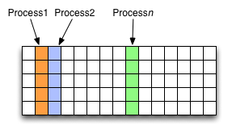
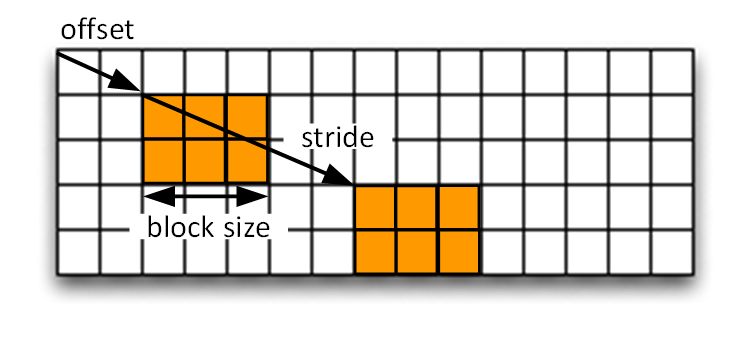

HDF5 Tutorial¶
This tutorial is an introduction to HDF5. It shows how to read existing HDF5 files, and how to create and modify your own files.
Before you start¶
Compiling the examples¶
To compile the examples in this tutorial you use the following:
h5cc <input_file.c> [-o <binary>]
This behaves like cc or mpicc depending on the environment.
For example compile and run as follows:
h5cc my_first_hdf5_test.c -o my_first_hdf5_test
./my_first_hdf5_test
Viewing the contents of an HDF5 file¶
The commandline utility ‘h5dump’ allows to view the contents of a data file, like this:
h5dump SampleFile.h5
For large datasets only the header data can be displayed:
h5dump -H SampleFile.h5
Reading an existing HDF5 file¶
In this section we’re going to read data from an existing HDF5 file.
View the contents¶
An HDF5 file has a container or tree structure, very similar to folders or directories in a Linux or Windows file system. The root container is always called “/”, just as in a file system, and containers may contain other containers.
The leaves of the tree are datasets. A dataset has a header and a data array. The header contains information such as the name of the dataset, the dimensions of the data array, the type of its elements, other annotations and user-defined attributes.
To start with, download example.h5 to the login node:
$ wget https://adrianjhpc.github.io/HDF5-Basics/c/html/_downloads/example.h5
We can have a look at its contents using ‘h5dump’:
$ h5dump example.h5
HDF5 "example.h5" {
GROUP "/" {
DATASET "dset" {
DATATYPE H5T_STD_I32LE
DATASPACE SIMPLE { ( 6, 15 ) / ( 6, 15 ) }
DATA {
(0,0): 1, 2, 3, 4, 5, 6, 7, 8, 9, 10, 11, 12, 13, 14, 15,
(1,0): 16, 17, 18, 19, 20, 21, 22, 23, 24, 25, 26, 27, 28, 29, 30,
(2,0): 31, 32, 33, 34, 35, 36, 37, 38, 39, 40, 41, 42, 43, 44, 45,
(3,0): 46, 47, 48, 49, 50, 51, 52, 53, 54, 55, 56, 57, 58, 59, 60,
(4,0): 61, 62, 63, 64, 65, 66, 67, 68, 69, 70, 71, 72, 73, 74, 75,
(5,0): 76, 77, 78, 79, 80, 81, 82, 83, 84, 85, 86, 87, 88, 89, 90
}
}
}
}
This file has one dataset which is located in the root container (group “/”) of the file. The dataset is called “dset” and contains a ‘SIMPLE’ dataspace which is an array - in this case a 2-dimensional array of size (6, 15). The type of the elements in the array is ‘H5T_STD_I32BE’, i.e. the values are 32-bit big-endian integers.
Accessing the file¶
Now we’re going to write some C code to open the data file and close it again:
#include "hdf5.h"
int main() {
hid_t file_id;
herr_t status;
file_id = H5Fopen("example.h5", H5F_ACC_RDWR, H5P_DEFAULT);
printf("Opened file - id: %i\n", file_id);
status = H5Fclose(file_id);
return 0;
}
This opens the file ‘example.h5’ and prints out a message. The options for creating or opening a file are:
- H5F_ACC_EXCL:
- creates a new file and fails if the file already exists. This is the default.
- H5F_ACC_TRUNC:
- creates a new file or opens and overwrites an existing one
- H5F_ACC_RDONLY:
- opens an existing file with read-only access
- H5F_ACC_RDWR:
- opens an existing file for reading and writing
See http://www.hdfgroup.org/HDF5/doc/UG/08_TheFile.html for more details.
To run this example, create a file (for example ‘tutorial.c’) with the C source code above and compile it as explained in the section ‘Before you start’.
Reading data¶
Now modify the above example to read the data. As we have seen from the output of h5dump, there is one dataset called “dset” in the root group “/”. First, we open the dataset whose contents we’re going to read (this assumes that the file ‘file_id’ has been opened already):
dataset_id = H5Dopen2(file_id, "/dset", H5P_DEFAULT);
Then create an array that is large enough to hold the dataset from the file:
int dset_data[6][15];
status = H5Dread(dataset_id, H5T_NATIVE_INT, H5S_ALL, H5S_ALL, H5P_DEFAULT, dset_data);
Once the dataset contents have been read you can print them out to the commandline.
Modify an HDF5 file¶
This section shows how to modify the structure of an HDF5 file, how to create and write datasets, and how to attach attributes to groups or datasets.
Creating groups¶
The example we’ve been reading has only one group, the root container “/”. Now we’re going to to create a few more groups.
After opening the file and reading its contents, create a new group:
group_id = H5Gcreate(file_id, "/Earthquake", H5P_DEFAULT, H5P_DEFAULT, H5P_DEFAULT);
Note that groups can be created using absolute paths or relative paths:
l_id = H5Gcreate(file_id, "/Earthquake/Laquila", H5P_DEFAULT, H5P_DEFAULT, H5P_DEFAULT);
This is the same as:
l_id = H5Gcreate(group_id, "Laquila", H5P_DEFAULT, H5P_DEFAULT, H5P_DEFAULT);
Now create the following group structure:

Creating a new dataset¶
Now we’re going to add a new dataset in the group “/Earthquake/Laquila/Traces”. A dataset has a name and is characterised by the dataspace (the shape of the array) and the datatype (the layout of the stored elements). For our scenario we are going to create a dataset that contains a 2-dimensional array of integers.
First we create the dataspace, which is a 2-dimensional array in our scenario. For example to create an array with dimensions (5, 10):
hsize_t dims[2];
dims[0] = 5;
dims[1] = 10;
dataspace_id = H5Screate_simple(2, dims, NULL);
A SIMPLE dataspace represents a multidimensional array. There are also SCALAR dataspaces (containing just one element) and NULL dataspaces that contain no elements. See http://www.hdfgroup.org/HDF5/doc/UG/UG_frame12Dataspaces.html for more details.
Now we can use the new dataspace to create the dataset “day1” within the group “Laquila”:
dataset_id = H5Dcreate2(l_id, "day1", H5T_NATIVE_INT, dataspace_id, H5P_DEFAULT, H5P_DEFAULT, H5P_DEFAULT);
There are many predefined datatypes. The native type H5T_NATIVE_INT corresponds to a C int type. For example, on an Intel based PC, this type is the same as H5T_STD_I32LE. See http://www.hdfgroup.org/HDF5/doc/UG/UG_frame11Datatypes.html for more details.
Writing to a dataset¶
Now create an integer array dset_data, with the same dimensions as the dataspace (5, 10), and fill it with some data. Then write its contents to the dataset:
int dset_data[5][10];
dset_data[0][0] = 23;
/* add more data (integer values) to the array here */
...
status = H5Dwrite(dataset_id, H5T_NATIVE_INT, H5S_ALL, H5S_ALL, H5P_DEFAULT, dset_data);
Don’t forget to close the dataset when finished:
status = H5Dclose(dataset_id);
Try to create more datasets in various groups and write to and read from them. You can always check the contents of your HDF5 file using h5dump.
Attributes¶
Attributes can be attached to HDF5 datasets or groups. An attribute has two parts: a name and a value. See http://www.hdfgroup.org/HDF5/doc/UG/UG_frame13Attributes.html for more information. Attributes are defined with a dataspace and type in the same way as datasets.
Let’s create a string attribute for the root group of our HDF5 file, stating the author:
char value[] = "Amy Krause";
len_value = strlen(value)+1;
attr_id = H5Screate(H5S_SCALAR);
attr_type = H5Tcopy(H5T_C_S1);
H5Tset_size(attr_type, len_value);
H5Tset_strpad(attr_type, H5T_STR_NULLTERM);
attr = H5Acreate2(file_id, "author", attr_type, attr_id, H5P_DEFAULT, H5P_DEFAULT);
status = H5Awrite(attr, attr_type, value);
The attribute is named ‘author’ and has a scalar dataspace (one element) of type C string. The size is the number of characters in the attribute value (10) plus one for the null terminator.
Now add an attribute to the dataset that you created above, within group ‘Laquila’, using the same technique, for various types. For example:
- Integer: H5T_NATIVE_INT
- Float: H5T_NATIVE_FLOAT
- Double: H5T_NATIVE_DOUBLE
Remember to use dataset_id instead of file_id if you create an attribute for a dataset, or group_id if you’re attaching an attribute to a group.
Modifying the HDF5 file structure¶
An HDF5 file is structured just like a file system, with directories or folders (called containers) and files (called datasets). The library allows to modify this structure in the same way as you can modify a file system.
Moving a dataset¶
You can easily move the dataset “dset” from the root container into the container “/Earthquake/Laquila/Traces/”, first opening both groups and then moving the dataset from one to the other. The following also renames the dataset from “dset” to “day2”:
file_id = H5Fopen("example.h5", H5F_ACC_RDWR, H5P_DEFAULT);
group_id = H5Gopen(file_id, "/Earthquake/Laquila/Traces", H5P_DEFAULT);
H5Lmove(file_id, "dset", group_id, "day2", H5P_DEFAULT, H5P_DEFAULT);
Symbolic links¶
It is also possible to create symbolic links to point to objects in other locations in the HDF5 file structure. Linked objects can be groups or datasets. For example, create a soft link to the dataset created above from within another group:
H5Lcreate_soft(<source_name>, group_id, <target_name>, H5P_DEFAULT, H5P_DEFAULT);
The source name is either an absolute path of the source of the link, or it a relative path within group group_id. The target is resolved at runtime and is a name of an object in the group group_id.
The link command is very similar to moving files above, but note that in the command for creating a soft link, the source and target names can’t be relative paths to different groups.
External links¶
External links are links from an HDF5 file to an object in another HDF5 file. Once created the external object behaves like it is part of the file.
Download the dataset NapaValley.h5.
Then link a group ‘Earthquake/NapaValley/’ in your file to the group ‘Traces’ in the external file:
H5Lcreate_external("NapaValley.h5", <TARGET_GROUP>, file_id, <SOURCE_GROUP>, H5P_DEFAULT, H5P_DEFAULT);
In the command above replace TARGET_GROUP with the group in the external file and SOURCE_GROUP with a new group in your file that points to the external group. Now you can read this new group as if it was part of the source HDF5 file.
Partial I/O¶
Regions and hyperslabs¶
As HDF5 is commonly used when writing or reading files in a parallel application, it is possible to select certain elements of a dataset rather than the whole array, thus allowing to write different portions of a file or dataset from each process. See http://www.hdfgroup.org/HDF5/doc/UG/12_Dataspaces.html#DTransfer for more information. Regions of a dataset are called hyperslabs.
For example you would use this when writing an MPI application in which data is distributed across processes. As shown below each row (or column) of a shared array is read by a different process and each process calculates a result from this data and writes it to a shared output file. The selection of hyperslabs provides you with a view of the dataset region that each process reads or writes, without having to worry about the physical location in the file or its shape and size. The HDF5 library also supports the selection of independent elements of a dataset and creating unions of selections.
An HDF5 hyperslab is defined by the parameters:

- offset
- stride
- count (the number of blocks)
- block size
Selecting a hyperslab¶
In the following example, you’re going to select and modify a hyperslab of the dataset you created above.
First create a dataspace of the same dimensions as the target dataset:
hsize_t dims[2] = {DIM0, DIM1};
space = H5Screate_simple (2, dims, NULL);
and create a data array, for example:
int data[DIM0][DIM1];
int i,j;
for (i=0; i<DIM0; i++)
for (j=0; j<DIM1; j++)
data[i][j]=(i+j)*100;
Then select a region by defining the start and the number of points to write:
hsize_t start[2], count[2], stride[2], block[2];
start[0] = 1;
start[1] = 2;
count[0] = 2;
count[1] = 3;
status = H5Sselect_hyperslab (space, H5S_SELECT_SET, start, NULL, count, NULL);
This selects the hyperslab (in this case a rectangle) of size (2,3) located at (1,2) in the array, like this:

Now write the data:
status = H5Dwrite (dataset_id, H5T_NATIVE_INT, H5S_ALL, space, H5P_DEFAULT, data);
You can also change the size of blocks and the stride between the blocks, for example:
stride[0] = 3;
stride[1] = 3;
block[0] = 2;
block[1] = 2;
status = H5Sselect_hyperslab (space, H5S_SELECT_SET, start, stride, count, block);
Use h5dump to check how the dataset looks now. Which elements have been replaced by new ones?
Selecting elements¶
You can also select single elements from a dataset, for example to write a sequence of points:
coord[0][0] = 0; coord[0][1] = 0;
coord[1][0] = 3; coord[1][1] = 3;
coord[2][0] = 3; coord[2][1] = 5;
coord[3][0] = 5; coord[3][1] = 6;
status = H5Sselect_elements(file_id, H5S_SELECT_SET, 4, (const hssize_t **)coord);